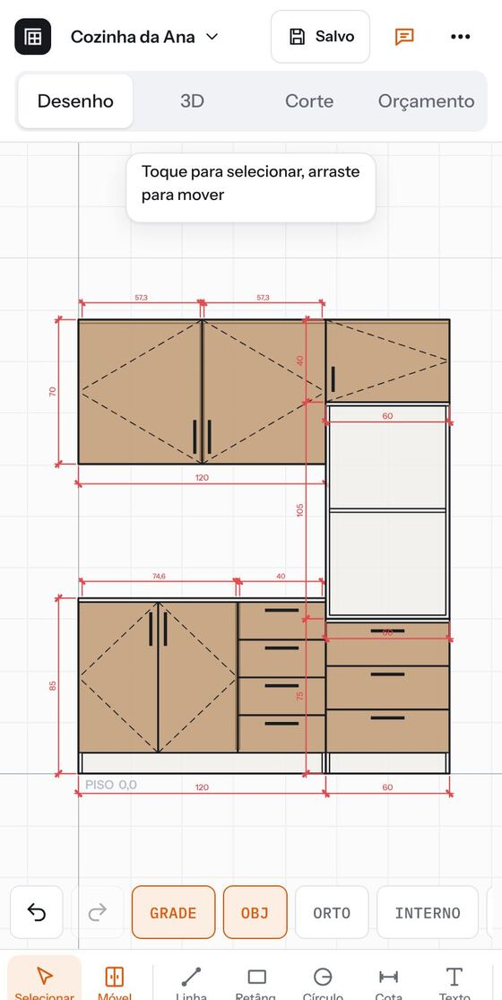
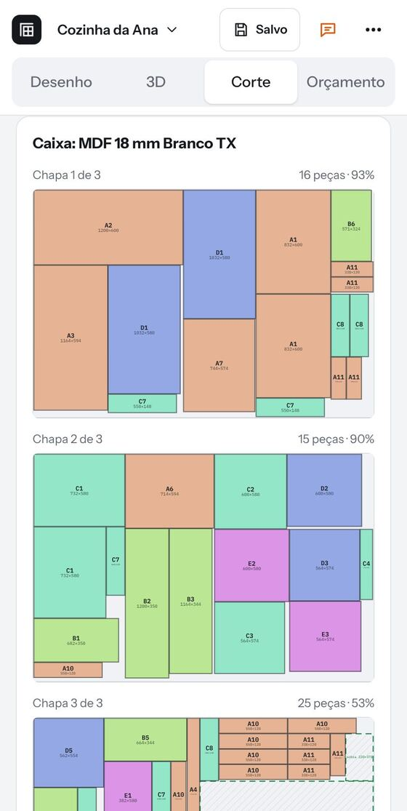
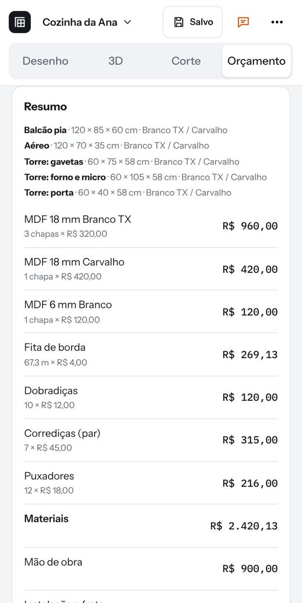
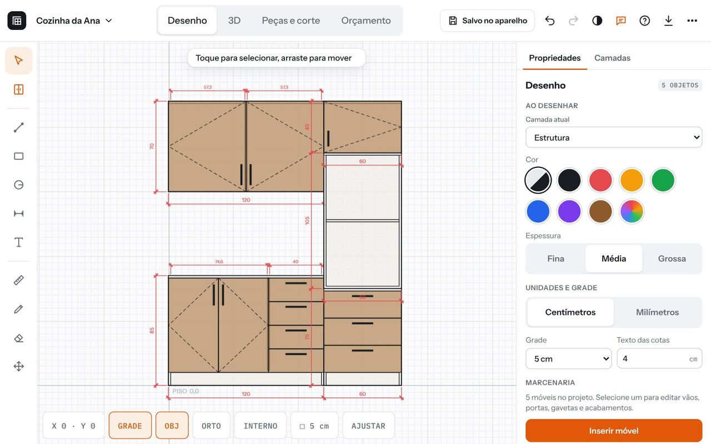

Do croqui no papel ao orçamento aprovado.
Desenhe o móvel com as medidas no celular, veja em 3D, tire a lista e o plano de corte e mande o orçamento em PDF para o cliente aprovar pelo WhatsApp.
Quatro abas, na ordem em que você trabalha.
O mesmo projeto passa do desenho para o 3D, para o corte e para o orçamento. Mudou uma medida, tudo se refaz sozinho.
- 1 · Desenho

Desenhe com medida
Linha, retângulo, cota e móveis prontos: balcão, aéreo, gaveteiro, roupeiro, estante, cômoda e cozinha completa. Você digita a medida e escolhe porta, gaveta, nicho ou porta de correr em cada vão.
- 2 · 3D
Mostre em 3D
Gire com o dedo, troque a cor do MDF entre 18 acabamentos e abra portas e gavetas para o cliente ver por dentro.
- 3 · Corte

Corte sem desperdício
Lista de peças em milímetros, fita de borda, ferragens e o plano de corte de cada chapa, respeitando o veio e mostrando as sobras que dá para aproveitar.
- 4 · Orçamento

Feche o orçamento
Você põe os preços da sua região, a mão de obra e a margem. Sai o PDF para o cliente, com botões para aprovar ou pedir ajuste pelo WhatsApp.
Valores das telas são só de exemplo. No app, cada um usa os preços dos seus fornecedores.
Feito para a rotina da marcenaria.
Croqui por foto
Tire foto do desenho no papel e a inteligência artificial monta o móvel com as medidas. Também dá para descrever falando ou escrevendo.
Clientes e relatórios
Veja o que foi orçado e o que foi vendido em cada mês, os projetos de cada cliente e o total de material.
Salvo na sua conta
Entre com Google ou e-mail e os projetos aparecem no celular, no tablet e no computador.
Funciona sem internet
Na obra ou na casa do cliente sem sinal, o app abre e salva no aparelho. Quando a internet volta, sobe sozinho.
Aprovação pelo WhatsApp
Mande o PDF ou o 3D para o cliente. Ele toca em Aprovar e a conversa já abre com você, com a mensagem pronta.
Leve para a fábrica
Exporte o desenho em DXF, SVG ou imagem e a lista de peças em CSV para a planilha ou a máquina de corte.

No tablet e no computador, o desenho ganha o painel de propriedades ao lado.
Comece a usar hoje.
Abra no navegador do celular e toque em Instalar. O ícone vai para a tela inicial como um app comum.
AutoMarcen completo
- Desenho, 3D, plano de corte e orçamento em PDF
- Croqui por foto e por voz com inteligência artificial
- Projetos salvos na conta, em todos os aparelhos
- Clientes e relatórios de vendas
- Atualizações incluídas
Perguntas frequentes
Preciso baixar na loja de aplicativos?
Não. Abra o link no Chrome do celular e toque em Instalar app. O AutoMarcen fica na tela inicial e abre como qualquer app.
Funciona no computador e no tablet?
Sim. No computador ele abre no navegador, e na tela maior aparecem as ferramentas e o painel de propriedades lado a lado.
Os preços das chapas e ferragens já vêm prontos?
Não, porque cada região tem um valor. Você digita os preços dos seus fornecedores uma vez e o app guarda para os próximos projetos.
A inteligência artificial acerta sempre?
Ela lê o croqui e monta o móvel, mas confira sempre as medidas antes de cortar. Você pode ajustar tudo no desenho.
E se eu ficar sem internet?
Depois da primeira vez, o app abre e funciona sem sinal. O projeto fica salvo no aparelho e vai para a conta quando a internet voltar. Só a parte de inteligência artificial precisa de internet.
Meus projetos ficam seguros?
Cada conta só enxerga os próprios projetos. Você também pode exportar tudo num arquivo para guardar uma cópia.
Faça o próximo orçamento no AutoMarcen.
Teste com um móvel que você já tem para orçar. Se ficar alguma dúvida, chame no WhatsApp.
Número de WhatsApp ainda não preenchido. Coloque em CONFIG.whatsapp, no fim deste arquivo.